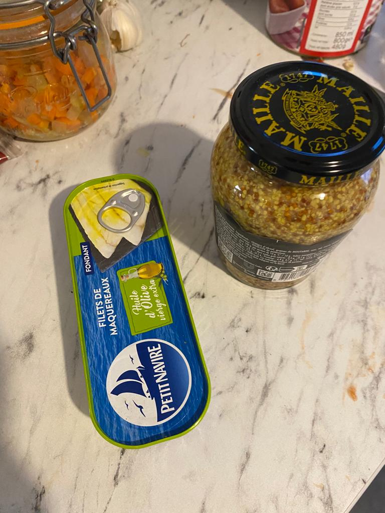

Les memes de la semaine
Cette semaine, nous nous sommes réunis afin de vous préparer une recette abordable (article sponsorisé par télérat), mangeable, je dirais même exquise. Nous vous présentons le Minestrome, une recette de soupe italienne, nous venant tout droit d'Italie. Quand je vivais au Pérou, ma grand mère m'en préparait tous les jours en me contant ses voyages dans cette contrée lointaine. C'est notamment au cours de son séjour à Napoli qu'elle a rencontré mon grand-père, Giuseppe. L'histoire est assez comique : il cherchait à quitter le pays discrètement et s'est glissé dans sa valise quand elle rentrait en Amérique ! Il n'a jamais nous voulu dire pourquoi. Ca restera un mystère :D. En tout cas ce fut le coup de foudre, ma grand mère m'a dit qu'en le voyant, elle n'a pas pu lui dire non. En tout cas, l'odeur de cette soupe éveille à chaque fois des souvenirs d'enfance en moi. Par exemple la fois où j'ai perdu mon père au magasin. Une gentille dame m'a accompagné à l'accueil et j'ai pu retrouver mon papa. Nous avons mangé du Minestrone 4 jours après.
Les ingrédients (pour 4 personnes + des restes):
Des courgettes
Des carottes
Des oignons
De l'ail
Du parmesan
250g de pâtes
Un cube de bouillon
De l'huile d'olive
Des tomates pelée en conserve
Assaisonnement (poivre, origan)
Etapes
Préparez les ingrédients


